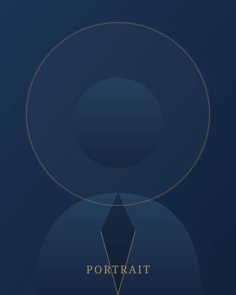

Φωτογραφία
Προφίλ
ΑΝΑΠΛΟΥΣ — πολιτιστική επιχειρηματικότητα με όραμα
Η ΑΝΑΠΛΟΥΣ ιδρύθηκε το 2005 από τη Βασιλεία Κατσάνη, αξιοποιώντας πολυετή εμπειρία στον χώρο του πολιτισμού, της εκπαίδευσης και της στρατηγικής επικοινωνίας.
Με αφετηρία τη συμμετοχή στον συντονισμό της μουσικής παραγωγής για τις Τελετές Έναρξης και Λήξης των Ολυμπιακών Αγώνων της Αθήνας 2004, η ΑΝΑΠΛΟΥΣ σχεδιάζει και υλοποιεί δράσεις που συνδέουν τον πολιτισμό με την ανάπτυξη, σε εθνικό και διεθνές επίπεδο.
- Ιδρύτρια & Διευθύνουσα Σύμβουλος: Βασιλεία Κατσάνη
- Συντονισμός μουσικής παραγωγής — Τελετές Ολυμπιακών Αγώνων, Αθήνα 2004
- Γλώσσες εργασίας: Ελληνικά, Αγγλικά, Γαλλικά